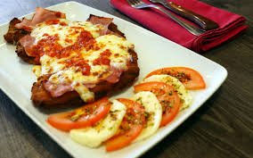

La milanesa napolitana es un plato tradicional de la cocina argentina, ideal para disfrutar con papas fritas o ensaladas.
Es una milanesa cubierta con salsa de tomate, jamón y queso, todo gratinado al horno.
La milanesa napolitana es un clásico de la comida rápida casera, perfecta para compartir con familia y amigos.